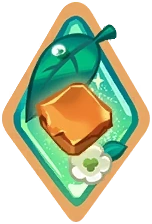
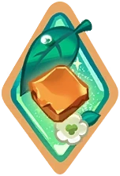

Upon transforming, Wind Archer Cookie removes all debuffs from himself, then shoots his Arrow of Gale, pushing back and stunning enemies, and applies the Trace of the Wind and Pursuer debuffs. While transformed, he will become immune to debuffs except for Curse and will shoot his Pursuer's Arrows with his attacks.
The Pursuer's Arrow attacks up to five enemies with the highest ATK and applies the Trace of the Wind and Pursuer debuffs to its targets. Once Pursuer reaches max stacks, it will explode and inflict damage proportional to the targets' Max HP, damage nearby enemies, and apply the Trace of the Wind debuff. Wind Archer Cookie applies the Mighty Gale buff to himself whenever he shoots the Pursuer's Arrow.
This Guardian Cookie casts Last Wind, which partially ignores the target's DMG Resist and inflicts additional damage to enemies proportional to the number of Mighty Gale stacks. Affected enemies will be trapped in a Cyclone. When entering the battle, Wind Archer Cookie's Max HP increases. (DMG proportional to Max HP is capped at 300,000.)
Max HP: +30.0%
Transformation: 11 sec
DMG Resist: +15.0%, ATK SPD +10.0% for 10 sec with regular attacks; stacks up to x5
DMG: Wind Element182.5% of ATK, ignores 40.0% of target's DMG Resist
Stun: 2.5 sec
Trace of the Wind: DMG dealt to Wind-type Cookies -30.0%, DMG dealt to other Cookies -12.0% for 30.0 sec; capped at x1
Mighty Gale: DMG Resist Bypass +2.0%, ATK +1.5% (self) for 8.0 sec; stacks up to x15
DMG: Wind Element93.7% of ATK + 9.4% of Max HP (Cookies)
Pursuer: 7.0 sec; stacks up to x3
Pursuer DMG: True Damage 10.5% of Max HP (Cookies), Wind Element166.3% of ATK (Others)
Pursuer Area DMG: Wind Element219.7% of ATK
Pursuer Cooldown: 1.0 sec
Trace of the Wind: DMG dealt to Wind-type Cookies -8.0%, DMG dealt to other Cookies -7.0% for 30.0 sec; capped at x1
DMG: Wind Element958.0% of ATK + Wind Element50.3% of extra DMG per stack of Mighty Gale, ignores 40.0% of target's DMG Resist
Cyclone Duration: 2.5 sec, not affected by enemy's Debuff Resist


 
